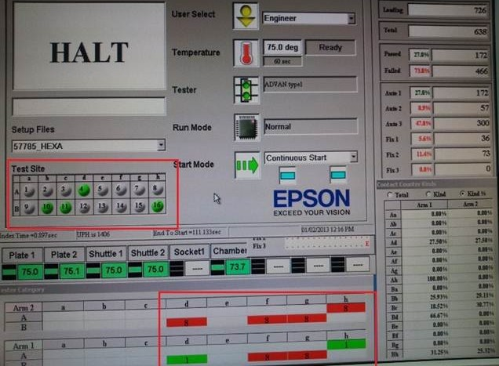

Service History
Subject: NS-8160W Device condition error at output shuttles during Testing R2 (Running site3,9,10&15)
Handler Model: NS-8160W(S/N: 121476, H02-NS816) High UPH 8 Hands
Controller: RC520 (S/N: 121476) HMI 8G11.51-SAS
Date: 3 Jan 2013
Symptom
NS-8160W Device condition error at output shuttles during Testing R2 (Running site3,9,10&15).
� No units found on output shuttle2.
� Check the input shuttles detected double units.
� Remove all the jamming units and continue to testing but problem persist.
� Notice that both index arms didn’t released the units after testing.
� Reset handler and found wrong site mapping during run Production.

Action taken:
>Noticed handler setup testing site selected and index arm contactor device pickup was not tally.
(Handler site selected on site 4,10,11,16,but handler is suction device on site 8,12,14,15)
>Reset handler and clean out all device.
>Perform contact test , index arm was able to pick up correct enabled site units.
>Tried dynamic dummy run using same handler setting but no abnormality found.
>Checked handler log file and simulated exact scenario where “skip” & “start” button pressed during device pick up error alarm on loader tray:
Result :
i. Input arm pick up sequence becomes wrong when “skip” and “start” button pressed.
ii. False alarm triggered on hotplate pockets filled with units (Device Remaining Error).
iii. Input arm places units on shuttle pocket for disabled sites and index arm picks up the units.
iv. Disabled sites tested and output shuttle alarms on “Device Condition Error”.
>Simulated the problem on H01-NS816 and the result was same as above.
>Checked the settings and handler configuration but no abnormality found.
>Tried different site disabled condition but still encountered the same issue.
>This is could be a software bug. Need to follow-up with vendor.
At the moment, please do not press “Skip” & “Start” button when encounter device pick up error on loader tray especially when sites disabled.
Action
This happened only on disable sites when partial tray is load in and 8 IO hand pick up empty pocket on tray.
1) 8IO hands pick up empty pocket (no unit on tray) so operator press “skip + start” in order to continue handler operation.
2) Follow by input hand place units on hotplate and pick up units on next row of hotplate pockets, this time “device remaining error” happened on hotplate.(units already on hotplate)
3) Require operator to remove remaining unit on hotplate pocket then Retry + Start to continue.
4) Next, input hand goes to empty hotplate pocket to pick which result device pickup error(there is no unit on hotplate), so operator have to skip in order to continue.
5) Input hand load units to input shuttle from hotplate, but load units to disabled sites on shuttle pocket.
6) Input shuttle moves to test site, Test arm pick up disabled sites units and continue testing.
7) After test, Test arm place units on output shuttle, but those units on hands remain on test hand, did not place on output shuttle, output shuttle move to unloading side and encountered device condition error.
ASE tried another NS-8160W s/n: 121448 with HMI ver1.8 this morning, encountered the same issue.
Cause